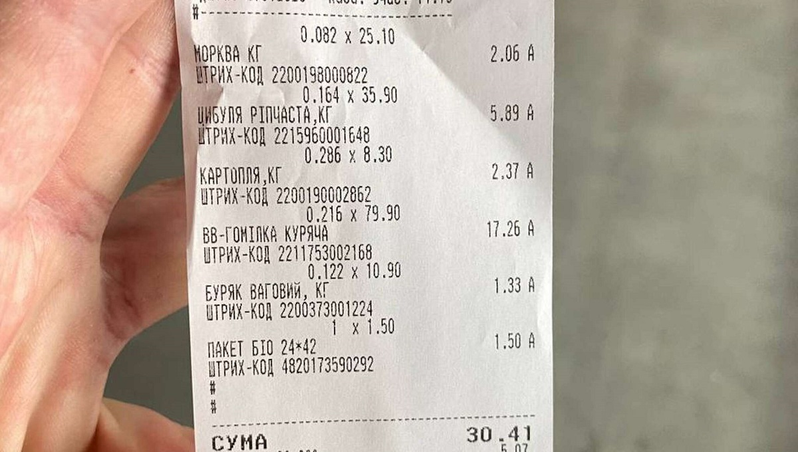

Прожить на $1 в день. Что можно приготовить на 41 гривню (эксперимент)
Первое и второе, но без компота. Vesti.ua попытались пообедать за скромную цену
Цены на продукты в последнее время существенно выросли. Соответственно, многие задумались об экономии. Глядя
на то, как народ стал экономить, редакция Vesti.ua решила провести эксперимент, призванный доказать или
опровергнуть, можно ли сегодня одному человеку пообедать за 1 доллар. На первый взгляд, кажется, что нет, за
41 гривню, а именно столько сегодня стоит доллар в обменниках, что-то существенное приготовить нереально. Но
мы все же решили попытаться приготовить за такую смешную сумму и первое, и второе. Причем сделать наш обед
максимально питательным.
В рамках эксперимента мы решили в качестве первого блюда “замахнуться” на борщ. Не самое, так сказать,
простое блюдо, зато наше родное – традиционно украинское. Правда, в связи с ограниченностью средств мы
приготовим борщ-лайт, в котором будет не хватать некоторых ингредиентов.
В качестве горячего у нас выступает порция гречки с одной куриной ножкой. Понятное дело, что мужчину такой
порцией не накормишь, но заморить червячка точно можно.
Итак, идем в супермаркет. Причем мы сразу решили полиэтиленовые кулечки в магазине не брать, поскольку один
такой сразу “откусит” у нашего заветного доллара 1,5 грн.
Маленький бюджет позволяет присматриваться только к курятине
Сначала идем в мясной отдел за курятиной. Мясо мы решили брать куриное, поскольку из всех видов мяса это
самый бюджетный вариант.
О курином филе мы даже не думали. Оно, во-первых, дорогое (на момент эксперимента 1 кг стоил в супермаркете
140 грн), а, во-вторых, для супов, а борща и подавно, не подходит. Останавливаемся на куриных ножках (79,90
грн/кг).
Покупаем две “гомілки” (216 граммов) – одна пойдет в борщ, второй отведена главная роль в нашем горячем
блюде.
На мясо мы потратили 17,26 грн.
В овощном отделе цены не радуют уже давно. Морковь с недавнего времени подорожала, пришлось брать по 25 грн
за килограмм. Одна морковь – 2,06 грн.
Пару картошек по 8,30 грн за килограмм затянули по весу на 286 граммов – в результате 2,37 грн.

Берем две луковицы по 35,90 грн за килограмм. Дороговато, можно в другом магазине найти дешевле, но
хочется уже все купить и бежать готовить. 164 грамма репчатого лука обошлись нам в 5,89 грн. Одна
луковица пойдет на борщ, вторая – на зажарку для гречки, чтобы она была сытнее.
Свекла пока еще радует ценой – 10,90 грн за килограмм. Покупаем 122 грамма за 1,33 грн. По большому
счету, если покупать и готовить свеклу каждый день, можно здорово сэкономить. А блюд из этого овоща в
украинской кухне очень много.
Итого за набор продуктов, включая НДС – 5,07 грн, мы отдали 30,41 грн. Каемся, в чеке присутствует пакет
за 1,50 грн, но будем считать, что мы его не брали, а эту сумму перебросим на 1 столовую ложку
подсолнечного масла (17 граммов), которая, по нашим подсчетам, стоит приблизительно 1,30 грн из расчета,
что бутылка масла (850 граммов) куплена за 63 грн.

На оставшиеся 10 грн мы покупаем 150 граммов гречки на развес (цена за килограмм – 60 грн). Этого нам с
головой хватит для гарнира на одну порцию.
Вы спросите, какой же борщ без капусты. Это непорядок. Но мы ее не купили, потому что на нее попросту не
хватило денег. Небольшой кочан потянет минимум на полкило, а это около 6 грн. Но поскольку у нас борщ-лайт,
чего-то в нем может не хватать.
"Змеиный" бульончик голодным не оставит
Накупив продуктов, идем домой готовить.
Кипятим воду в кастрюле и бросаем туда одну куриную ножку – бульончик выйдет, как говорят, “змеиный”, но
хоть какой-то навар.
Трем на терке свеклу и морковь, режем лук и обжариваем все с 0,5 столовой ложки подсолнечного масла.
Оставшуюся каплю масла используем, чтобы зажарить лук для гречки.
С такой красивой зажаркой голодным точно не останешься
Привариваем в бульоне картофель и соединяем с зажаркой. В последнюю секунду вспоминаем, что соль мы не
купили, но будем считать, что одолжили щепотку соли у соседки.
Пока наше варево доходит до готовности, параллельно варим гречку, жарим в сковородке куриную ножку и там же
небольшое количество лука, чтобы приправить гречку. Впрочем, лук – штука необязательная совсем, поскольку
гречка сама по себе вкусная.
В результате на стол мы ставим два блюда: тарелку борща-лайт и тарелку вареной гречки с обжаренной в масле
куриной ножкой.
Причем на выходе у нас получилось три порции борща и полторы порции гречки. Если ты голодный, то наесться
можно.
Результаты наших стараний. Обед за 41 грн выглядит вполне вкусно